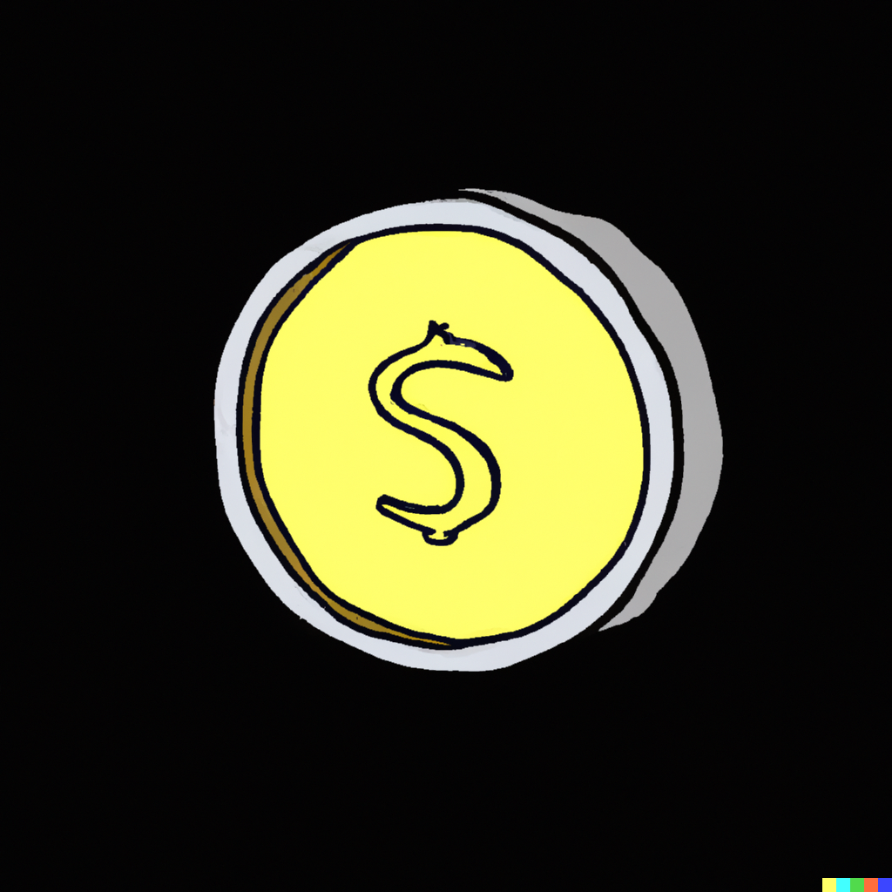

AI-remake av retrospel · Original 2023
Laddar orden…
Orden kunde inte laddas. Försök igen.
Läs ordet och välj bilden som passar. Tryck på en bokstav för att höra den!
Rätt svar: +1 mynt. Fel svar: −1 mynt, som lägst 0. Du får försöka igen.
